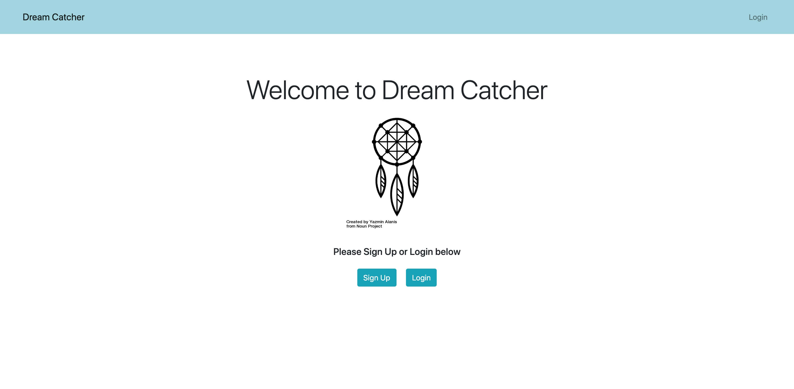
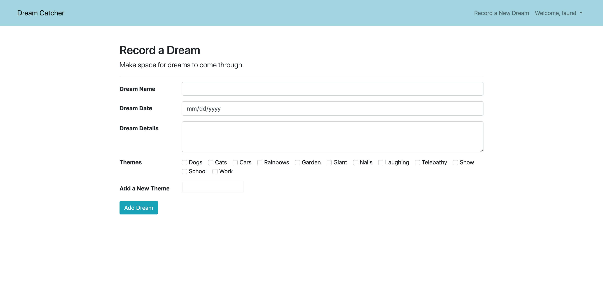
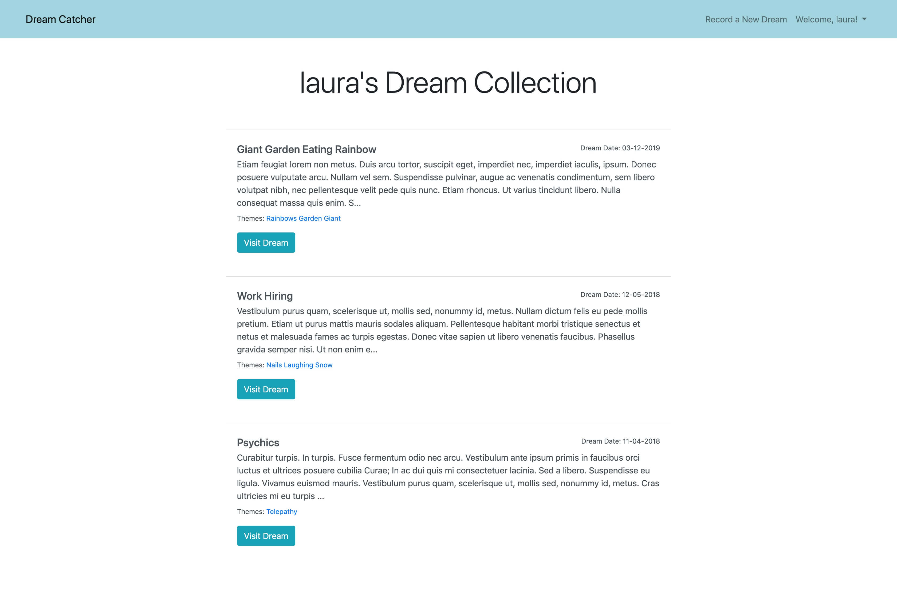
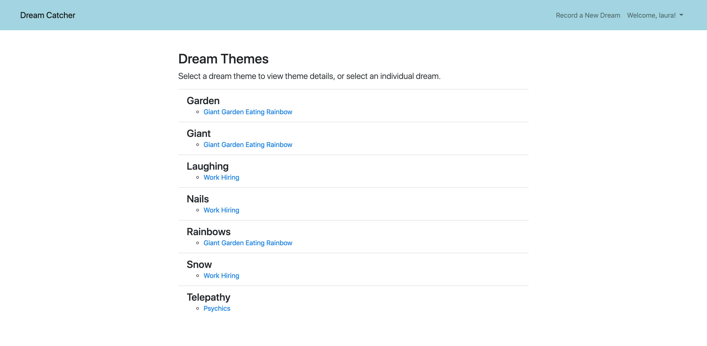
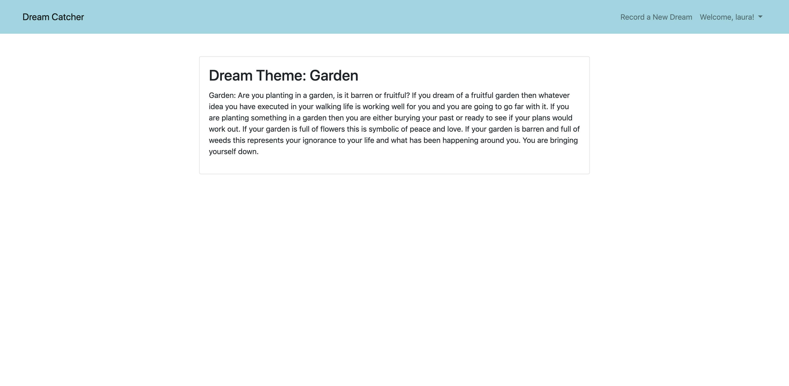

<div id="ajax-page" class="ajax-page-content">
    <div class="ajax-page-wrapper">
        <div class="ajax-page-nav">
            <div class="nav-item ajax-page-prev-next">
                <a class="ajax-page-load" href="earlybird.html"><i class="lnr lnr-chevron-left"></i></a>
                <a class="ajax-page-load" href="on-tap.html"><i class="lnr lnr-chevron-right"></i></a>
            </div>
            <div class="nav-item ajax-page-close-button">
                <a id="ajax-page-close-button" href="#"><i class="lnr lnr-cross"></i></a>
            </div>
        </div>

        <div class="ajax-page-title">
            <h1>Dream Catcher</h1>
        </div>

        <div class="row">
            <div class="col-sm-7 col-md-7 portfolio-block">
                <div class="owl-carousel portfolio-page-carousel">
                    <div class="item">
                        
                    </div>
                    <div class="item">
                        
                    </div>
                    <div class="item">
                        
                    </div>
                    <div class="item">
                        
                    </div>
                    <div class="item">
                        
                    </div>
                </div>
                <div class="block-title">
                    <h3>Video Demo</h3>
                </div>
                <div class="portfolio-page-video embed-responsive embed-responsive-16by9">
                  <iframe class="embed-responsive-item" src="https://www.youtube.com/embed/XmdDqprMzD0?rel=0" frameborder="0" allow="accelerometer; autoplay; clipboard-write; encrypted-media; gyroscope; picture-in-picture" allowfullscreen></iframe>
                </div>

                <!--
                <div class="portfolio-page-image">
                    
                </div>
                -->

                <script type="text/javascript">
                    jQuery(document).ready(function($){

                        $('.portfolio-page-carousel').owlCarousel({
                            smartSpeed:1200,
                            items: 1,
                            loop: true,
                            dots: true,
                            nav: true,
                            navText: false,
                            margin: 10
                        });

                    });
                </script>
            </div>

            <div class="col-sm-5 col-md-5 portfolio-block">
                <!-- Project Description -->
                <div class="project-description">
                    <div class="block-title">
                        <h3>Description</h3>
                    </div>
                    <ul class="project-general-info">
                        <li><p><i class="fab fa-github"></i> <a href="https://github.com/lauradarlak/dream-catcher-app/tree/scraper" target="_blank">Project Repo</a></p></li>
                    </ul>

                    <p class="text-justify"><strong>Dream Catcher</strong> is a CRUD, Model-View-Controller application using Sinatra. This app allows users to keep track of their dreams. Each dream receives a name and description and can be assigned user-created themes. Users’ dream data is persisted in a SQLite3 database and accessed by Active Record Object Relational Mapping (ORM). Users are able to create new dreams, view individual dreams and a dream index, edit and delete dreams. Data on dream themes are presented to each user in a theme index. Dream interpretations are generated by scraping dreamdictionary.com for relevant dream theme data.</p>
                    <ul class="text-justify">
                        <li>Built a CRUD, MVC app using Sinatra to create a simple content management system</li>
                        <li>Utilized Nokogiri to scrape an online dream dictionary for dream interpretations relevant to user submitted dreams</li>
                        <li>Designed database schema and managed data with SQLite and ActiveRecord</li>
                        <li>Applied validations and flash error messages to handle invalid user input</li>  
                    </ul>
                    <!-- /Project Description -->

                    <!-- Technology -->
                    <div class="tags-block">
                        <div class="block-title">
                            <h3>Technology</h3>
                        </div>
                        <ul class="tags">
                            <li><a>Sinatra</a></li>
                            <li><a>Nokogiri</a></li>
                            <li><a>SQLite</a></li>
                        </ul>
                    </div>
                    <!-- /Technology -->
                </div>
                <!-- Project Description -->
            </div>
        </div>
    </div>
</div>
